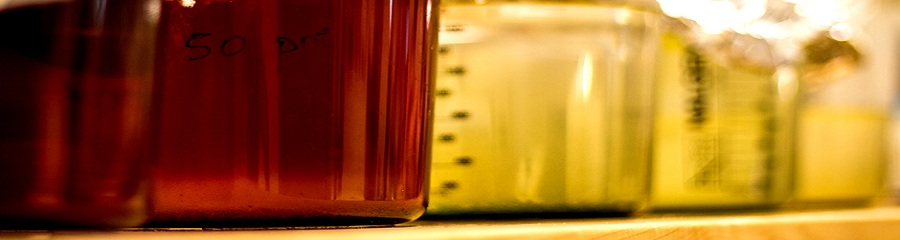

Итерации / Еволюция на поколенията
От случайно начално състояние ("посявка") на живи клетки в полето, наблюдателите на еволюцията могат да проследят постоянната промяна на
популацията за всеки отрязък време. Шаблоните, появяващи се в резултат на простите правила могат с право да се считат за форма на красота.
Малките изолирани шаблони без никаква първоначална симетрия се стремят да станат симетрични. Когато това се случи, тази симетрия може само
да се обогати, но не може да бъде загубена, освен ако някой друг преместващ се шаблон не се доближи достатъчно за да разруши цялата фигура.
В някои от случаите посявката евентуално измира, като всички живи клетки изчезват, въпреки че това може да се случи след голям брой поколения.
Повечето първоначални фигури "угасват", като се превръщат в неподвижни или вечно осилиращи между състоянията си шаблони. Някои конфигурации
генерират един или повече планера (gliders) или космически кораби (spaceships), които се отдалечават безкрайно от стартовата си позиция.
Космическите кораби могат да се придвижват само по една клетка напред за единица време и поради това се приема, че тяхната скорост е
"светлинна скорост" за клетъчния автомат и се отбелязва със c. Така се определя скоростта на всеки един движещ се шаблон - c/n,
където n е периода, за който фигурата изминава една позиция. За осцилиращите шаблони се въвежда параметърът p - период на
повторение.

Основният въпрос е дали Играта на Живота е обратима, т.е. дали от дадено състояние можем да се върнем в предишно или даже в първоначално
състояние. Отговорът е твърдо НЕ, тъй като много състояния водят да празно поле(локва) и съответно всякаква предходна информация се губи по
време на еволюцията на поколенията.
Първите интересни шаблони(patterns) в Играта на Живота са били открити без използване на компютри. Най-простите неподвижни шаблони ("still
lifes") и повтарящи се такива - осцилатори ("oscillators"— надмножество на неподвижните конфигурации) са открити при проследяване съдбата на
различни малки стартови комбинации като са били използвани хартия, черни дъски или настолни комбинаионни игри (като играта "ГО" например) и т.н.
По време на тези първоначални изследвания Джон Конуей (създателят на играта) е установил, че шаблонът R-pentomino не се стабилизира в рамките
на малък брой итерации. По-късно е установено, че са му необходими 1103 поколения за да се стабилизира, като през това време има популация 116
и е изпуснал 6 ПЛАНЕРА (gliders). Това са били и първите открити планери (глайдери).
Съществуват множество видове шаблони, появяващи се по време на развитие на поколенията и в зависимост от първоначалната "посявка", включващи
неподвижни шаблони, осцилатори и шаблони, които се преместват по полето ("локвата") - т.нар. космически кораби ("spaceships"). Някои от
най-интересните и най-често използваните шаблони са показани по-долу в схемите в контекста на водонедораслите.
- Гъстота на популацията
- Гъстотата на шаблон е граничната пропорция живи клетки в квадрат с нечетна размерност около дадена клетка, където рамерите на квадрата
клонят към безкрайност. С други думи гъстотата определя максималния брой живи клетки в даден шаблон, които имат шанс да оцелеят в следващите
поколения. През 1994 Noam Elkies доказва, че максималната гъстота на неподвижен шаблон е 1/2, което е била и предполагаемата стойност.
По-късно през 1995 Marcus Moore предоставя по-просто доказателство и установява, че неподвижен шаблон в сектор с размер m × n може
да има максимум (mn+m+n)/2 живи клетки.
- неподвижен шаблон (still life)
- Всеки стабилен шаблон, който е краен и непразен, т.е. съдържа определен брой клетки, които не се променят при еволюцията. За целите на
изброимостта обаче тази дефиниция е недостатъчна, защото например ако приемем всяка двойка БЛОКОВЕ за стабилен шаблон (което е така
практически), то тогава би съществувал и шаблон с безкрайно много БЛОКОВЕ, който също е стабилен. Затова е въведена по-стриктна дефиниция,
казваща че даден шаблон е прост стабилен само ако островът, който образува не може да бъде разделен на по-малки стабилни шаблони. Всички
останали се приемат за псевдо стабилни шаблони.
- БЛОК (block)
- (p1) Най-често срещаният неподвижен шаблон.
- КОШЕР (beehive)
- (p1) Вторият най-често срещан неподвижен шаблон.
- ЛОДКА (boat)
- (p1) Единственият неподвижен шаблон, съставен от 5 клетки.
- ДВОЕН БЛОК (bi-block)
- (p1) Най-малкият псевдо неподвижен шаблон.
- МИГАЛКА (blinker)
- (p2) Най-малкият и най-често срещаният осцилатор. Открит от Конуей, Март 1970.
- ФАР (beacon)
- (p2) Третият по популярност осцилатор. Открит от Конуей, Март 1970.
- ПЛАНЕР (glider)
- (c/4 диагонално, p4) Най-малкият, най-често срещаният и първият открит придвижващ се шаблон. Създаден е от Richard Guy през 1970
докато групата на Конуей е изследвала еволюцията на R-pentomino-то. Терминът ПЛАНЕР (glider) понякога се бърка със значението на
"космически кораб" (spaceship).
- МАЛЪК КОСМИЧЕСКИ КОРАБ (LWSS - lightweight spaceship)
- (c/2 ортогонално, p4) () Най-малкият познат космически кораб, придвижващ се ортогонално. Открит е от Конуей през 1970г.
По-големите представители са СРЕДЕН и ТЕЖЪК КОСМИЧЕСКИ КОРАБ (MWSS и HWSS).
- R-pentomino
- По принцип е най-активното полиомино и същевременно с по-малко от шест клетки - всички останали шаблони се стабилизират в рамките на 10 поколения,
а този екземпляр се модифицира непрекъснато до поколение 1103, като в резултат има популация от 116.
- КРЪСТ (cross)
- (p3-осцилатор) Открит от Robert Wainwright през Октомври 1989.
| 0 | 0 | + | + | + | + | 0 | 0 |
| 0 | 0 | + | 0 | 0 | + | 0 | 0 |
| + | + | + | 0 | 0 | + | + | + |
| + | 0 | 0 | 0 | 0 | 0 | 0 | + |
| + | 0 | 0 | 0 | 0 | 0 | 0 | + |
| + | + | + | 0 | 0 | + | + | + |
| 0 | 0 | + | 0 | 0 | + | 0 | 0 |
| 0 | 0 | + | + | + | + | 0 | 0 |
- ВЛАКЧЕ (puffer)
- Обект, който се придвижва като космическите кораби, но оставя следи (живи клетки) след себе си. Първите познати влакчета са открити
от Bill Gosper и се се придвижвали ортогонално със скорост c/2 ( на схемата е показан най-първият от тях, открит през 1971). Малко
по-късно са открити и диагонално продвижващи се със скорост c/12 (използващи ПАРНA МАШИНА).
| 0 | + | + | + | 0 | 0 | 0 | 0 | 0 | 0 | + | 0 | 0 | 0 | 0 | 0 | + | 0 | 0 | 0 | 0 | 0 | 0 | + | + | + | 0 |
| + | 0 | 0 | + | 0 | 0 | 0 | 0 | 0 | + | + | + | 0 | 0 | 0 | + | + | + | 0 | 0 | 0 | 0 | 0 | + | 0 | 0 | + |
| 0 | 0 | 0 | + | 0 | 0 | 0 | 0 | + | + | 0 | + | 0 | 0 | 0 | + | 0 | + | + | 0 | 0 | 0 | 0 | + | 0 | 0 | 0 |
| 0 | 0 | 0 | + | 0 | 0 | 0 | 0 | 0 | 0 | 0 | 0 | 0 | 0 | 0 | 0 | 0 | 0 | 0 | 0 | 0 | 0 | 0 | + | 0 | 0 | 0 |
| 0 | 0 | 0 | + | 0 | 0 | + | 0 | 0 | 0 | 0 | 0 | 0 | 0 | 0 | 0 | 0 | 0 | 0 | 0 | + | 0 | 0 | + | 0 | 0 | 0 |
| 0 | 0 | 0 | + | 0 | 0 | + | + | 0 | 0 | 0 | 0 | 0 | 0 | 0 | 0 | 0 | 0 | 0 | + | + | 0 | 0 | + | 0 | 0 | 0 |
| 0 | 0 | + | 0 | 0 | 0 | + | + | 0 | 0 | 0 | 0 | 0 | 0 | 0 | 0 | 0 | 0 | 0 | + | + | 0 | 0 | 0 | + | 0 | 0 |
- ПАРНА МАШИНА (puffer engine)
- Шаблон, използван като основен задвижващ компонент на влакчетата. Може да бъде сам по себе си ВЛАКЧЕ, КОСМИЧЕСКИ КОРАБ или даже да бъде
нестабилна фигура ако се използва самостоятелно (както е на фигурата по-долу).
| 0 | + | 0 | + | 0 | 0 |
| + | 0 | 0 | 0 | 0 | 0 |
| 0 | + | 0 | 0 | + | 0 |
| 0 | 0 | 0 | + | + | + |
- ВЛАКОВА КОМПОЗИЦИЯ (puffer train)
- Пълното име на влакчето, въведено от Конуей още преди да има известни примери. Този термин е приложен също и за оригиналната влакова
композиция, открита от Bill Gosper и показана по-долу. Това влакче замърсява много (оставя много следи), като опашката му не се
стабилизира до поколение 5533. Вторят познат шаблон-влакче.I
| 0 | + | + | + | 0 | 0 | 0 | 0 | 0 | 0 | 0 | 0 | 0 | 0 | 0 | + | + | + |
| + | 0 | 0 | + | 0 | 0 | 0 | 0 | 0 | 0 | 0 | 0 | 0 | 0 | + | 0 | 0 | + |
| 0 | 0 | 0 | + | 0 | 0 | 0 | 0 | + | + | + | 0 | 0 | 0 | 0 | 0 | 0 | + |
| 0 | 0 | 0 | + | 0 | 0 | 0 | 0 | + | 0 | 0 | + | 0 | 0 | 0 | 0 | 0 | + |
| 0 | 0 | + | 0 | 0 | 0 | 0 | + | 0 | 0 | 0 | 0 | 0 | 0 | 0 | 0 | + | 0 |